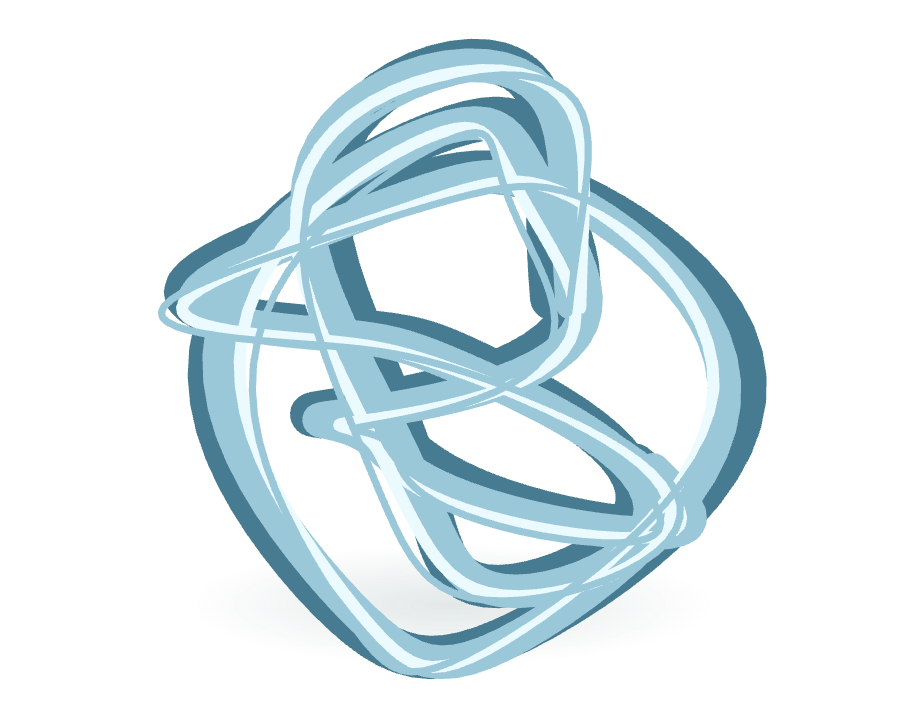

Uma oportunidade.
Capacidades compartilhadas.
Exploramos colaborações em pesquisa terapêutica, vacinas e diagnóstico, conectando nossa abordagem computacional às próximas etapas de investigação.
Apresentar uma oportunidade
Capacidades que se complementam.
Vamos definir uma contribuição concreta para a sua pesquisa ou para um programa do nosso portfólio.
O que podemos oferecer
Desenho de análises computacionais, integração de evidências, priorização de candidatos e documentação dos critérios de decisão, conforme o escopo acordado.
Em projetos sob demanda, organizamos uma pergunta delimitada e entregáveis para sua equipe. No codesenvolvimento, discutimos um plano de pesquisa e responsabilidades compartilhadas.
Conhecer projetos sob demandaCapacidades que buscamos
Colaboradores com experiência experimental, síntese e formulação, ensaios biológicos ou avaliação de desempenho diagnóstico, conforme o programa.
Também buscamos discutir com empresas e instituições a viabilidade técnica, os recursos e os caminhos de desenvolvimento de cada oportunidade.
Explorar os programasComo começamos
- Apresentação da pergunta e das capacidades de cada parte.
- Definição de escopo, entregáveis, critérios de avaliação e próximos marcos.
- Discussão de recursos, confidencialidade, propriedade intelectual e responsabilidades antes da execução.
Construir a pergunta.
Definir o caminho.
Um programa conjunto começa pelo alinhamento entre a pergunta científica e as capacidades de cada participante.
A ArgosAI contribui com sua abordagem computacional em desenvolvimento. Buscamos discutir colaborações que aproximem a seleção de candidatos da validação experimental.
A primeira aplicação é em leishmaniose. Outras oportunidades exigem avaliação científica e técnica específica.
O que precisamos construir juntos.
Objetivo comum
Definir a pergunta do programa, os candidatos de interesse e os critérios para avançar entre etapas.
Plano de trabalho
Alinhar responsabilidades, recursos, entregas e necessidades de validação.
Condições de colaboração
Discutir acesso a dados, confidencialidade e condições de uso dos resultados antes da execução.
Uma colaboração começa com clareza.
Quem pode propor uma colaboração?
Empresas, laboratórios e grupos de pesquisa com uma oportunidade em pesquisa terapêutica, vacinas, formulações ou diagnóstico e capacidades que possam complementar o trabalho computacional.
O programa já está em fase clínica?
Não. A plataforma está em estágio de protótipo computacional. Validação experimental e benchmarks comparativos ainda são necessários.
Como são definidos os direitos sobre resultados?
As condições são discutidas entre as partes para cada colaboração. O site não estabelece direitos, exclusividade ou termos contratuais.